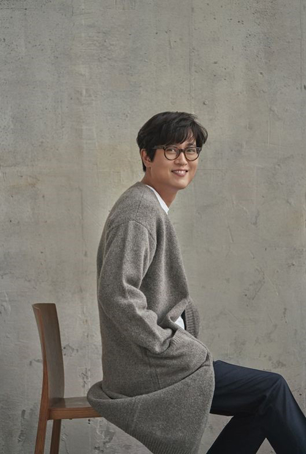

이름 : 김동률
신체 : 177cm, 65kg
소속 그룹 : 베란다 프로젝트
소속사 : 뮤직팝
가족 : 1남 2녀 중 장남
학력 : 버클리음악대학 작곡과 학사
사이트 :
공식 사이트
,
트위터
,
페이스북
대표곡
감사
다시 사랑한다 말할까
답장
출발
음원 감상(유튜브)
(재생되지 않을 경우, 하단에 YOUTUBE.COM을 클릭하여 유튜브에서 보시길 바랍니다.)